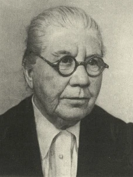

Валентина Мамонтова

селекционер-новатор
жизнь в науке
Родилась в Саратове. С детства увлекалась ботаникой. Окончила естественное отделение физико-математического факультета Саратовского университета.
Вся её научная деятельность связана с Саратовской селекционной станцией (ныне НИИ сельского хозяйства Юго-Востока). Здесь она прошла путь от лаборанта до доктора наук.
суть открытия
Мамонтова разработала метод ступенчатой гибридизации — скрещивание культурных сортов с дикими родичами и последующий отбор. Это позволило создавать сорта, устойчивые к засухе, болезням и дающие высокий урожай.
- сочетание ценных признаков
- ускорение селекции
- мировое признание
🌾 ступенчатая гибридизация
Метод, созданный Валентиной Мамонтовой, произвёл революцию в селекции. Суть: на первом этапе скрещиваются культурный сорт и дикий вид (донор полезных свойств). Затем гибрид снова скрещивается с культурным сортом — и так несколько раз, ступенчато закрепляя нужные качества.
Этот подход сегодня используется во всех селекционных центрах мира для создания новых сортов пшеницы, ячменя, риса.
★ выведенные сорта
Её сорта занимали миллионы гектаров в СССР и за рубежом. Некоторые выращиваются до сих пор.
🌍 вклад в мировую науку
Труды Валентины Мамонтовой стали фундаментом для современных селекционных программ. Её методы преподают в университетах, а созданные ею сорта пшеницы кормили и кормят людей в разных странах — от России до Канады и Австралии.
Доктор сельскохозяйственных наук, автор более 100 научных работ.
🌱 память: Имя Валентины Николаевны Мамонтовой носит одна из улиц Саратова. На здании НИИ сельского хозяйства Юго-Востока установлена мемориальная доска. Её научное наследие продолжает жить в каждом колосе, выращенном на полях.